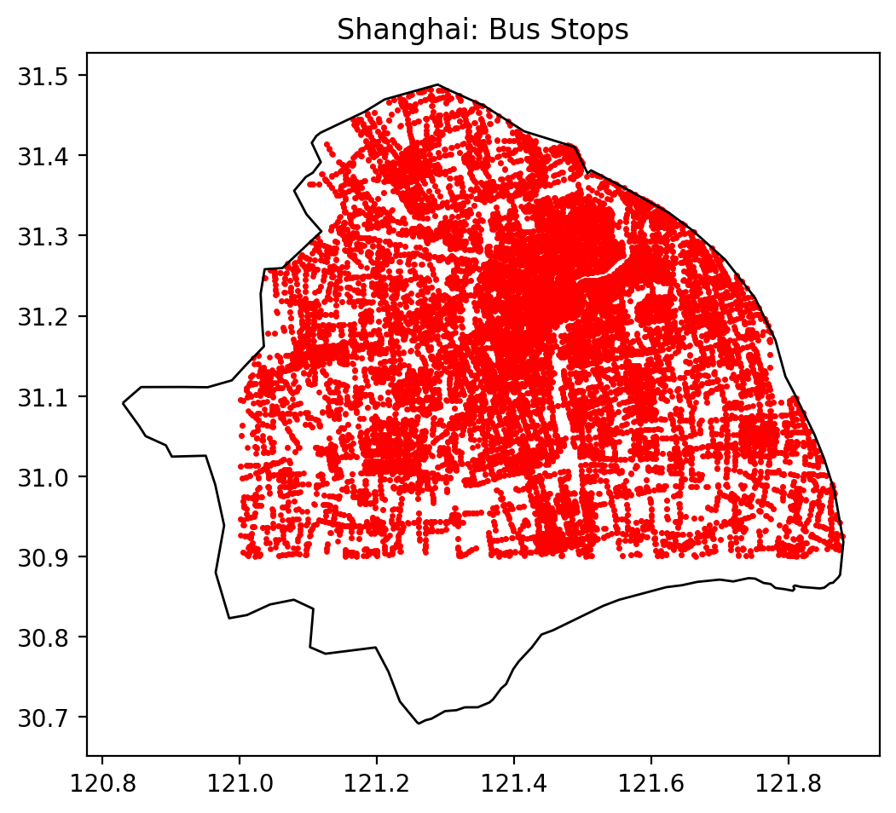
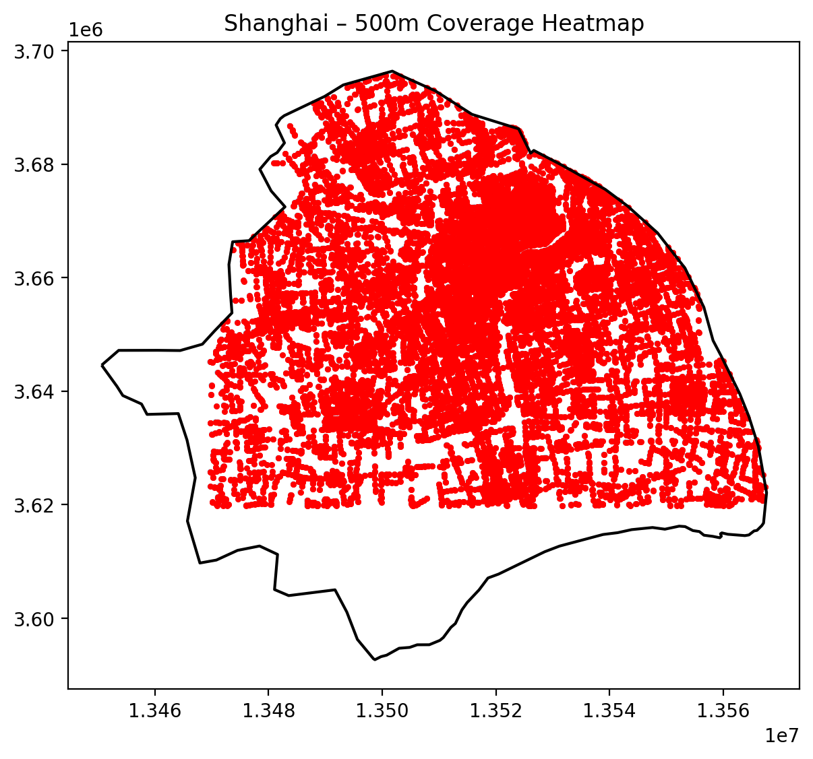

Shanghai
1. Bus stops and boundary

The point map shows an extremely dense web of bus stops across Shanghai’s main urban area. The coverage is close to continuous in the historic Puxi core and along major corridors extending towards the south and southeast. By contrast, the western and southern edges of the polygon appear much more weakly served, with clear gaps between linear clusters of stops.
A key data limitation is visible here. The boundary used for Shanghai comes from an open-data administrative layer that includes substantial areas of water, port land, industrial space and peri-urban green space. In addition, the polygon only represents the main built-up municipality, not the outer islands such as Chongming or Changxing. In the processing pipeline, only the polygon containing the largest number of bus stops was retained as the “city” boundary, in order to make Shanghai comparable with the other cities’ compact urban footprints.
This choice has two implications:
- Some land inside the boundary is not actually urbanised, which dilutes density metrics (stops per km²) relative to the intensity of development.
- Outlying districts and islands with their own local bus systems are excluded from the analysis, so the maps focus on the metropolitan core rather than the full municipality.
These caveats are important when interpreting the comparative results: Shanghai’s bus system appears less dense than Singapore or Amsterdam partly because its reference area is much larger and more heterogeneous.
2. 500 m coverage

The 500 m coverage map shows that most of the built-up portion of the polygon lies within walking distance of at least one bus stop. The red dots (stops) are embedded in a near-continuous layer of buffers, especially in the central north–south axis and in the eastern “fan” that spreads across Pudong.
From the summary table, Shanghai’s 500 m coverage ratio is about 0.55 (55.2% of the city area within 500 m of a stop). This value is very similar to the other three cities (all between 55% and 57%), indicating that in terms of areal coverage, Shanghai is competitive despite its much larger total area (about 6956 km²). The high coverage is largely driven by intense stop spacing in the core districts, while the more weakly served fringe contributes relatively little to the numerator but a lot to the denominator.
Compared with:
- New York City, where coverage is also ~56% but over a more fragmented archipelago, Shanghai’s coverage comes from a single, continuous urban sheet rather than multiple boroughs separated by water.
- Singapore, with a similar coverage share but smaller land area, Shanghai achieves comparable coverage despite more dispersed development and significant non-urban land inside the boundary.
- Amsterdam, where coverage is slightly higher (56.8%) in a compact municipality, Shanghai’s figure is notable given the presence of rural and industrial tracts within the city polygon.
Thus, the 500 m results suggest that spatial equity in basic bus access is not dramatically worse in Shanghai than in the benchmark cities, even though the visual impression of empty fringe areas might suggest otherwise.
3. Kernel density heatmap

The KDE heatmap reveals the internal hierarchy of Shanghai’s bus stop network. High-intensity “ridges” of density run:
- north–south through the historic core of Puxi, roughly aligned with major arterial roads and metro corridors,
- east–west towards the inner ring and Lujiazui, capturing the radial orientation of routes feeding the central business district,
- southward towards emerging sub-centres and new towns.
Unlike Amsterdam, where density peaks are tightly clustered around a relatively small inner core, Shanghai exhibits a broad plateau of medium–high density punctuated by multiple hot spots. This pattern is consistent with Shanghai’s role as a polycentric megacity, where employment and activity are no longer confined to a single CBD.
When compared with Singapore’s heatmap, Shanghai looks less uniformly bright: Singapore’s island-wide planning and strong trunk-feeder structure produce an almost continuous field of high density. In Shanghai, historic street grids, redevelopment patches and industrial belts introduce more variability, with some corridors substantially better served than adjacent neighbourhoods.
The KDE heatmap is therefore useful not only for identifying hotspots but also for revealing structural differences in network design:
- A coarse radial-plus-grid system in Shanghai, with strong trunks along expressways and major arterials.
- Finer-grained island-wide coverage in Singapore.
- Dense central cluster with suburban spokes in Amsterdam.
- Borough-based, legacy networks in New York.
4. Nearest-neighbour distances

The nearest-neighbour (NN) histogram for Shanghai is heavily skewed towards short distances: most stops lie within 50–150 m of their nearest neighbour, with a heavy tail extending beyond 300 m. From the summary statistics:
- Mean NN distance: ~91 m
- Median NN distance: ~56 m
- 90th percentile (p90): ~201 m
These values indicate that for the majority of stops, inter-stop spacing is relatively tight, consistent with dense linear routes along major corridors and local streets. At the same time, the long tail in the histogram and a maximum distance exceeding 1200 m reveal a subset of isolated or peripheral stops—likely at the very edge of the urbanised area or on radial highways.
In comparative perspective:
- Shanghai’s mean NN distance (~91 m) is shorter than New York’s (~183 m), reflecting more closely spaced stops and a stronger emphasis on fine-grained local access rather than high-speed bus travel.
- It is longer than Amsterdam’s (~63 m) and slightly longer than Singapore’s (~80 m), which both combine compact geography with strong transit-oriented planning and, in Amsterdam’s case, a dense tram network.
- The median NN distance for Shanghai (56 m) is very close to Amsterdam’s and Singapore’s, suggesting that typical inner-city stop spacing is comparable, while the longer tail for Shanghai is driven by a few sparse peripheral corridors.
Spatially, the NN map shows the shortest distances (dark colours on the legend) clustered in the historic core and key radial corridors, while longer distances appear on:
- the southwestern and southern fringes, where urban expansion meets agricultural or industrial land,
- some large infrastructure corridors and bridges where stops are closely tied to interchange nodes rather than local street blocks.
These patterns reflect Shanghai’s rapid outward urbanisation, where transit infrastructure often precedes fine-grained local street integration.
5. Shanghai bus network (transit reference)

Image source: Google Maps Transit – Shanghai urban and suburban bus routes.
The Google Transit bus-line map complements the stop-based analysis by illustrating the route structure of Shanghai’s bus system. Several features stand out:
- A dense radial web centred on the inner districts of Puxi and the Hongqiao–Xujiahui–Lujiazui axis, where multiple overlapping routes follow major arterials.
- Ring-like corridors roughly aligned with the inner and middle ring roads, supporting tangential movements that do not pass through the historic core.
- Strong east–west and north–south trunks extending into Pudong and towards satellite towns, where routes run along major expressways and only gradually branch into local grids.
- Noticeable gaps over water and non-urban land (e.g. wetlands, port zones, agricultural areas), which correspond to the empty regions seen along the edges of the analytical boundary.
When juxtaposed with the KDE and NN maps, this line map helps explain why coverage remains high despite the low overall density of stops:
- The presence of many overlapping routes in the core produces very short NN distances and high KDE values.
- Outermost corridors are long and relatively straight, with stops spaced further apart, which shows up as the long tail in the NN histogram but contributes little to the coverage ratio because many of these segments run through low-density or industrial land.
Compared with other cities:
- Shanghai’s network resembles New York’s in having strong radial trunks and some long express-like corridors, but the stop spacing is much tighter and the overall pattern is more grid-like in the inner city.
- Relative to Singapore, Shanghai exhibits less systematic trunk-feeder hierarchy and more overlapping services along the same streets, reflecting incremental service additions rather than a single island-wide redesign.
- In contrast to Amsterdam, where tram and bus routes concentrate on a compact historic centre with clearly delimited suburbs, Shanghai’s route map illustrates the scale of its polycentric megacity, with multiple dense clusters connected by high-capacity radial lines.
6. Data limitations and interpretation
For Shanghai, several data limitations are particularly important:
- The city boundary includes substantial non-urban land (water bodies, industrial zones, peri-urban green space). This tends to underestimate bus stop density and may overstate the share of “unserved” area along the periphery.
- Only the largest built-up polygon was included in the analysis, meaning that outer islands and some exurban districts are excluded. As a result, the findings are most appropriately interpreted as relating to Shanghai’s main metropolitan core, not the full municipal territory.
- Bus stops close to metro or suburban rail interchanges are mapped as points only; the analysis does not explicitly model multimodal accessibility, which is crucial in a metro-rich city like Shanghai.
Despite these limitations, comparing Shanghai to New York, Singapore and Amsterdam under a consistent 500 m coverage and NN framework yields several robust insights:
- In terms of basic spatial access (share of land within 500 m of a bus stop), Shanghai performs similarly to the other cities, even though its urban area is much larger and more heterogeneous.
- Shanghai’s internal structure—a combination of radial trunks, ring roads and emerging sub-centres—is clearly reflected in the KDE and NN patterns, differentiating it from Singapore’s island-wide uniformity and Amsterdam’s compact monocentric form.
- The city’s rapid outward growth generates a dual structure: very dense inner-city service with short NN distances, alongside more sparsely served fringe corridors. This duality suggests that future improvements could focus on filling gaps in newly urbanised areas and rationalising overlapping routes in the saturated core.
Overall, Shanghai’s bus system, as captured by this dataset, sits somewhere between European compact-city density and North American metropolitan scale. Recognising the limitations of the boundary and the focus on the main urban polygon is essential for drawing fair comparisons and for grounding any policy recommendations that might be derived from these maps.